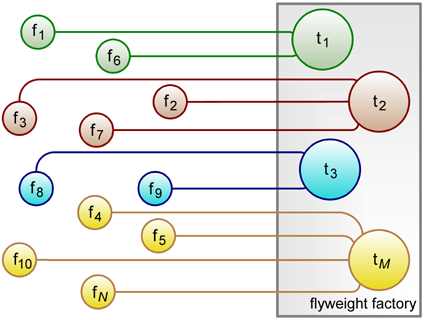

Boost.Flyweight TutorialBoost.Flyweight Tutorial
Boost.Flyweight TutorialBoost.Flyweight Tutorial

Fig. 1: Representation of a flyweight scenario.
Consider an application that has to manage large quantities of objects of moderate size, potentially requiring more memory than reasonably available. When these objects are immutable, i.e. they do not modify its internal state except maybe for reattaching to a new set of state data, and some additional conditions are met, a very convenient optimization technique known as the flyweight pattern can be introduced.
Let us say there are N different objects living at a given time inside the application, globally taking M different values. If N is much greater than M, that is, there are many equivalent objects, we can eliminate the implicit redundancy by replacing the original objects with handle classes which refer to a common repository of shared value objects, as depicted in the figure. The handle objects or flyweights, which act as proxies for the actual values, typically occupy the size of a mere pointer. The larger the value classes, and the greater the N/M ratio, the more significant the memory savings achieved by this tecnhique. The classical example of application of the flyweight idiom is that of a word processor: each letter in the document carries a large wealth of information, such as its Unicode identifier, font, size, typesetting effects, etc., but given that the degree of letter repetition in a document is extremely high, implementing those letters as flyweight classes allows us to easily handle documents ranging in the hundreds of thousands of characters.
Most presentations of the design pattern found in the literature do make a
distinction between the flyweight intrinsic information (the constant
data factored out into the repository) and extrinsic, mutable
information, which is stored along with the flyweight objects or passed
externally. This separation analysis can have some merit from the point of
view of application design, but when it comes to implementation extrinsic
information has no impact on the overall flyweight scheme. So,
Boost.Flyweight assumes that the type onto which the library operates
entirely consists of intrinsic information: this allows for a particularly
appealing realization of the idiom in C++ in which
flyweight<T> is an opaque type convertible to
const T&.
The central repository of shared value objects is known as the flyweight factory. This component is able to locate and return a reference to an object with a given value, or insert the value if no copy was previously stored. Boost.Flyweight controls the interaction of flyweights with their factory transparently to the programmer, so that a casual user of the library need not even be concerned about the presence of such factory. Boost.Flyweight uses by default a factory based on a hashed container which is expected to be suitable for most situations. When this is not the case, it is possible to customize the factory or even replace it with another one of a different type, either provided by Boost.Flyweight or defined by the user. Other aspects of the implementation are also customizable and extendable.
All the public types of Boost.Flyweight reside in namespace ::boost::flyweights.
Additionaly, the main class template flyweight is lifted to namespace
::boost by means of a using declaration. For brevity of
exposition, the fragments of code in the documentation are written as if the following
directives were in effect:
using namespace ::boost; using namespace ::boost::flyweights;
Although Boost.Flyweight features an extensive customization framework controlling many internal implementation aspects, the library is designed in such a way that most users need not be concerned about or even aware of the underlying complexity. Learning to use Boost.Flyweight as an off-the-shelf component can be acomplished merely by reading the basics section and skimming through the part on key-value flyweights, the section on flyweight type tagging and the discussion of some technical issues. The configuration section teaches how to fine tune the different internal components of the library. Only very advanced usage scenarios will require implementing user-provided pluggable components: this is covered on the extension section.
Revised August 13th 2008
© Copyright 2006-2008 Joaquín M López Muñoz. Distributed under the Boost Software License, Version 1.0. (See accompanying file LICENSE_1_0.txt or copy at http://www.boost.org/LICENSE_1_0.txt)